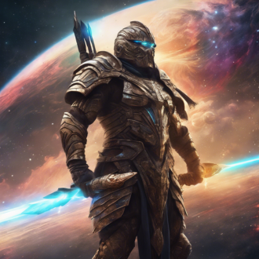

-
Homem de Lata

Descrição
Homem de Lata, o guardião metálico da cidade, possui a habilidade de controlar o aço com sua mente, moldando-o em formas impenetráveis. Com sua armadura reluzente e resistência inquebrável, ele enfrenta qualquer ameaça com coragem e determinação. Seu coração de ferro pulsa com a missão de proteger os inocentes, tornando-o um símbolo de esperança em tempos sombrios. O herói de aço, cuja força reside não só na sua armadura, mas na sua determinação incansável pela justiça.
-
Mulher Chicote

Descrição
Mulher Chicote, a mestra das cordas imbuídas de eletricidade, é ágil e letal como um relâmpago. Com suas habilidades acrobáticas e destreza incomparável, ela domina seus oponentes, envolvendo-os em um emaranhado eletrizante. Sua justiça é rápida e implacável, enquanto ela protege os inocentes com sua ferocidade e graça. Uma heroína que desafia as sombras com sua luz elétrica.
-
Super Cueca

Descrição
Super Cueca é um herói inusitado, dotado de superforça e resistência inigualáveis, sempre pronto para salvar o dia com seu traje icônico. Seu cinto especial transforma energia solar em poder bruto, permitindo voar e criar escudos de energia. Com um senso de humor único e coragem inabalável, ele enfrenta vilões e protege a cidade, provando que heróis podem surgir das maneiras mais inesperadas.
-
Thoro
Descrição
Thoro é um herói imponente, mestre do trovão e das tempestades, capaz de invocar relâmpagos com um gesto de suas mãos. Seu martelo místico, forjado pelos deuses, concede-lhe força sobre-humana e a habilidade de voar. Guardião dos céus e da terra, Thoro combate as forças do mal com coragem divina e poder elemental. Sua presença é um farol de esperança em tempos de escuridão.
-
Homem Lunar

Descrição
Homem Lunar é um herói enigmático que canaliza o poder da lua para obter força, agilidade e habilidades regenerativas excepcionais. À noite, ele pode manipular a luz lunar para criar ilusões e se tornar quase invisível. Com uma conexão profunda com os ciclos lunares, ele antecipa movimentos inimigos e revela segredos ocultos. Protetor das sombras, Homem Lunar luta incansavelmente para trazer justiça sob o manto da noite.
-
Super Proessora

Descrição
Super Professora é uma heroína sábia e valente, com o poder de absorver e compartilhar conhecimento instantaneamente. Seu intelecto prodigioso permite resolver enigmas complexos e prever estratégias inimigas. Utilizando ferramentas tecnológicas avançadas e uma mente brilhante, ela inspira e guia outros heróis. Na batalha contra a ignorância e a injustiça, Super Professora é uma força imbatível e uma fonte de inspiração.